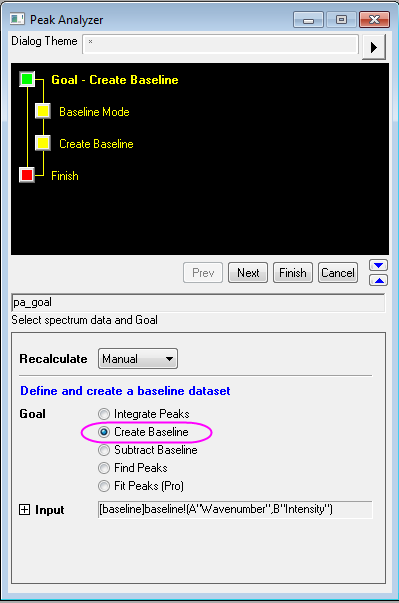
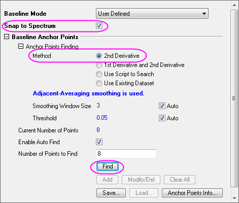
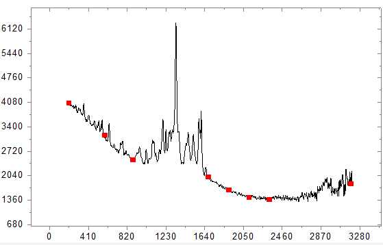
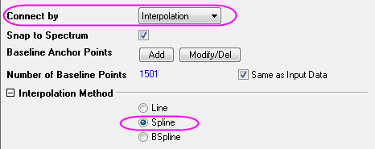
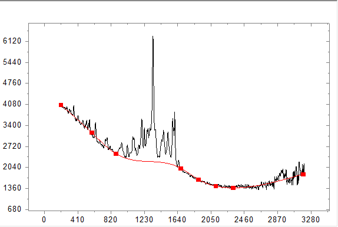
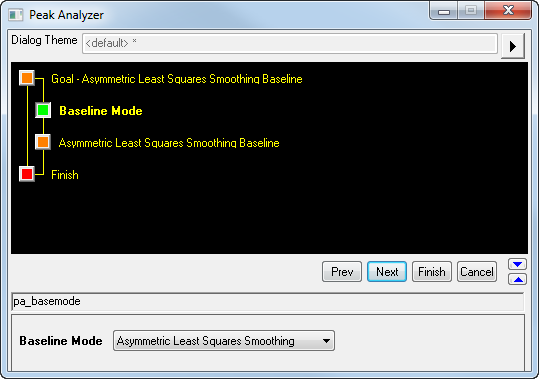
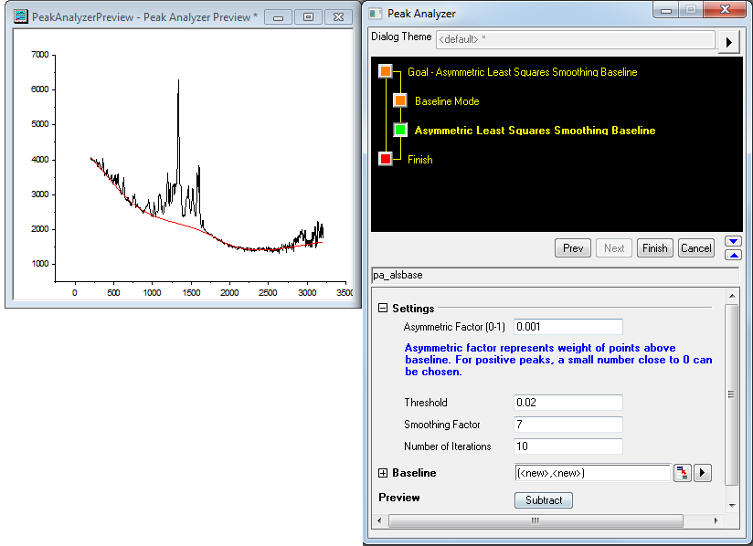
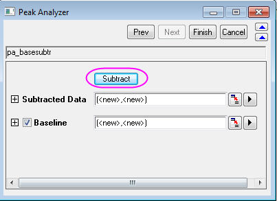
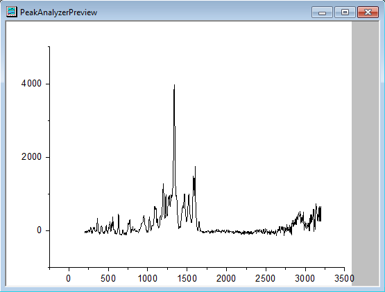

Mit dem Hilfsmittel Peaks analysieren eine Basislinie erzeugen und subtrahieren
Create-Subtract-Baseline
Zusammenfassung
In OriginPro kann der Assistent Peaks analysieren Basislinien erstellen und subtrahieren. Es gibt verschiedene Möglichkeiten, Basislinien zu erstellen. Sie können Ankerpunkte von Basislinien automatisch oder manuell erzeugen und sie dann mittels Interpolation verbinden oder sie mit einer Funktion anpassen.
Origin-Version mind. erforderlich: 2016 SR0
Was Sie lernen werden
- Basislinie mit der Methode der 2. Ableitung erstellen
- Basislinie mit der asymmetrischen Glättung der kleinsten Quadrate (AsLS) erstellen (Pro)
- Basislinie aus dem Spektrum subtrahieren
Schritte
Basislinie mit der Methode der 2. Ableitung erstellen
- Öffnen Sie eine neue Arbeitsmappe und importieren Sie <Origin-Verzeichnis>\Samples\Spectroscopy\Baseline.dat. Markieren Sie die zweite Spalte. Wählen Sie im Hauptmenü Analyse: Peaks und Basislinie: Peaks analysieren, um den Dialog Peaks analysieren zu öffnen.
- Wählen Sie auf der ersten Seite (Ziel) des Assistenten Peaks analysieren die Option Basislinie erzeugen als Ziel. Klicken Sie auf Nächstes, um zur Seite Modus Basislinie zu gelangen.
- 
- Als Nächstes erstellen Sie eine benutzerdefinierte Basislinie für dieses Spektrum, indem Sie Ankerpunkte definieren. Wählen Sie auf der Seite Modus Basislinie in der Auswahlliste Modus Basislinie die Option Benutzerdefiniert. Aktivieren Sie das Kontrollkästchen Am Spektrum ausrichten, um sicherzustellen, dass ein Basislinienankerpunkt beim Hinzufügen oder Verschieben zurück auf das Spektrum gezogen wird.
- Die ersten beiden Methoden unter Ankerpunkte suchen sind die am häufigsten verwendeten. Sie können Ankerpunkte automatisch basierend auf der Ableitung des Spektrums suchen. Wenn die Basislinie annähernd konstant ist, ist die Methode 1. Ableitung und 2. Ableitung leistungsstärker. Ansonsten sollten Sie 2. Ableitung verwenden. In diesem Beispiel ist die Basislinie kurviger. Aus diesem Grund wird die Methode 2. Ableitung für die Suche nach den Ankerpunkten verwendet.
- Weitere Methoden zum Suchen von Ankerpunkten und zugehörige Glättungsparameter finden Sie unter: Seite Modus Basislinie.
- 
- Klicken Sie jetzt auf die Schaltfläche Suchen in der Gruppe Ankerpunkte der Basislinie. Die Ankerpunkte werden Ihnen in einem Vorschaufenster angezeigt.
- 
- Klicken Sie auf Nächstes, um zur Seite Basislinie erzeugen zu gelangen, und wählen Sie Interpolation in der Auswahlliste Verbinden mit. Wählen Sie in der Gruppe Interpolationsmethode die Option Spline. Im Vorschaufenster wird Ihnen eine Vorschau des Spektrums angezeigt. Klicken Sie auf Fertig, um die Basisliniendaten zu erhalten.
- 
- 
Basislinie mit der asymmetrischen Glättung der kleinsten Quadrate (AsLS) erstellen (Pro)
- Beginnen Sie auf der Seite Modus Basislinie und wählen Sie Basislinie der asymmetrischen Glättung der kleinsten Quadrate (AsLS) als Basislinienmethode. Die Basislinie der asymmetrischen Glättung der kleinsten Quadrate kann sehr einfach fein auf einige Parameter eingestellt werden, ohne vorher Ankerpunkte auswählen zu müssen.
- 
- Klicken Sie auf Nächstes, um zu Seite Basislinie der asymmetrischen Glättung der kleinsten Quadrate zu gelangen, passen Sie die Parameter an, um die optimale Basislinie zu erhalten, und klicken Sie dann auf die Schaltfläche Fertig, um Ergebnistabelle und -diagramm auszugeben.

Basislinie aus einem Spektrum subtrahieren
- Wenn Sie die Basislinie subtrahieren möchten, wählen Sie als Ziel aus der Startseite die Option Basislinie subtrahieren.
- Nachdem Sie eine Basislinie erstellt haben, klicken Sie auf die Schaltfläche Nächstes, um zur Seite Basislinie subtrahieren zu gelangen.
- Klicken Sie auf die Schaltfläche Subtrahieren, um eine Vorschau der subtrahierten Daten anzuzeigen. Die Basisliniendaten und das subtrahierte Spektrum werden ausgegeben, nachdem Sie auf die Schaltfläche Fertig geklickt haben. Die Abbildungen unten zeigen die Seite Basislinie subtrahieren und die Vorschau des subtrahierten Spektrums.
- 
- 